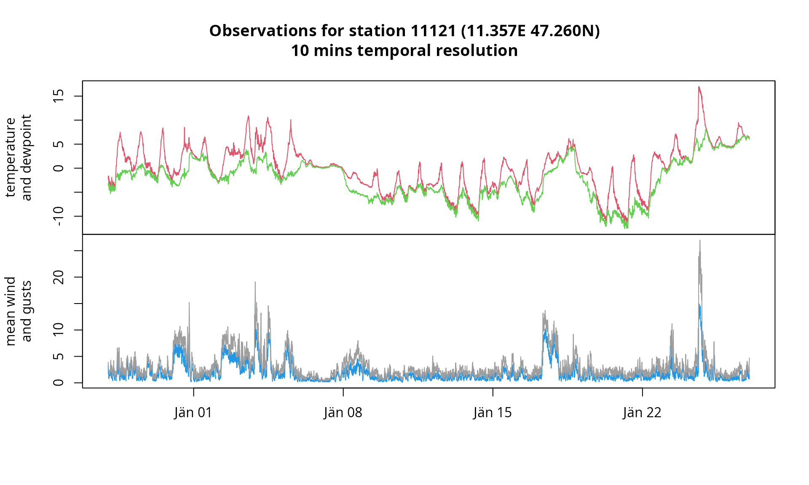

Datasets
Reto Stauffer
stationdata.RmdThis article contains a series of examples on how to retrieve station observations for different data sets. There is a limit on how many data can be retrieved via the API in one single call which is taken care by the function gs_stationdata(). If the number of expected data exceeds the limit, the function will automatically split thre request in multiple calls. Some information about that is shown when the argument verbose is set to TRUE (FALSE by default).
More information about the data sets can be found on the Geosphere Austria/ZAMG Data hub website.
Hourly synop observations
Synop, 1 station, 3 parameters
- Dataset: historical hourly synop observations
- Ten consecutive days 2020
- Parameters: three parameters only
- Stations: single station,
11330Mayrhofen
mayrhofen <- gs_stationdata(mode = "historical",
resource_id = "synop-v1-1h",
start = "2022-01-01",
end = "2022-01-11",
parameters = c("T", "Td", "ff"),
station_ids = 11330)
# zoo object
head(mayrhofen)## T Td ff
## 2022-01-01 00:00:00 -0.8 -1.4 1
## 2022-01-01 01:00:00 -0.7 -1.1 1
## 2022-01-01 02:00:00 -0.9 -1.5 0
## 2022-01-01 03:00:00 -1.5 -1.8 0
## 2022-01-01 04:00:00 -2.0 -2.3 0
## 2022-01-01 05:00:00 -2.2 -2.5 1
# simple zoo plot
plot(mayrhofen,
screen = c(1, 1, 2),
col = c(2, 3, 4),
ylab = c("air temperature [C]\nwelt bulb temperature [C]",
"mean wind speed [m/s]"))As expert = TRUE (default) the function will internally download the meta information calling gs_metadata() to check if both arguments provided station_ids and parameters are valid (i.e., the station and the parameters are valid for this specific data set).
This can be disabled using expert = FALSE which prevents these internal checks and save some time - but may result in API request errors if the station(s) or parameter(s) do not exist.
One can, of course, get the meta information for the station and parameters if needed (see gs_metdatata() for more details):
meta <- gs_metadata(mode = "historical", resource_id = "synop-v1-1h")
subset(meta$stations, id == 11330)## Simple feature collection with 1 feature and 11 fields
## Geometry type: POINT
## Dimension: XY
## Bounding box: xmin: 11.85167 ymin: 47.1625 xmax: 11.85167 ymax: 47.1625
## Geodetic CRS: WGS 84
## type id group_id name state altitude valid_from valid_to
## 1 INDIVIDUAL 11330 NA MAYRHOFEN Tirol 640 2007-08-28 2100-01-01
## has_sunshine has_global_radiation is_active geometry
## 1 NA NA TRUE POINT (11.85167 47.1625)## name long_name
## 39 T Lufttemperatur
## 40 Td Taupunkttemperatur
## 57 ff Windgeschwindigkeit
## desc unit
## 39 Lufttemperatur °C
## 40 Taupunkt (bis 2001/06/19 tw. mit rel beschickt!) °C
## 57 Windgeschwindigkeit in 1/10 m/s (wird umgerechnet, wenn Knoten: *5.14) m/sSynop, multiple stations, all parameters
- Dataset: historical hourly synop observations
- Ten consecutive days 2020
- Parameters: all available parameters (uses
parameters = NULL; default) - Stations: three different stations
The function allows to retrieve data for multiple stations at once and to download all avialable parameters by not specifying parameters (uses parameters = NULL). This will return all avialable data for each of the stations in a named list, where the names of the elements correspond to the station id.
x <- gs_stationdata(mode = "historical",
resource_id = "synop-v1-1h",
start = "2020-01-01",
end = "2020-01-11",
station_ids = c(11330, 11328, 11120),
expert = TRUE)## Warning in gs_stationdata(mode = "historical", resource_id = "synop-v1-1h", :
## no observations available for station 11328; returning NA
class(x)## [1] "list"
names(x)## [1] "11330" "11328" "11120"expert = TRUE skips the internal check whether or not the station_ids given are valid (i.e., if they even exist for this data set).
Note that station 11328 does not provide any data for the time period specified resulting in a warning and an will return a missing value (NA).
x[["11328"]]## [1] NA
is.na(x[["11328"]])## [1] TRUEThe other two elements of the list again contain objects of class c(“gs_stationdata”, “zoo”):
## $`11330`
## [1] "gs_stationdata" "zoo"
##
## $`11120`
## [1] "gs_stationdata" "zoo"## $`11330`
## Ir Iw Ix Pg Pp RR3 RRR T Td Tg Tmax Tmin W1 W2
## 2020-01-01 00:00:00 3 1 6 958.0 1037.5 NA -1 -1.1 -1.8 NA NA NA NA NA
## 2020-01-01 01:00:00 3 1 6 958.1 1037.7 NA -1 -1.3 -2.0 NA NA NA NA NA
## a datumsec dd einspielzeit ff flag_rst gruen p qflag
## 2020-01-01 00:00:00 8 1577836800 NA 1577836916 1 0 0 0.7 0
## 2020-01-01 01:00:00 5 1577840400 0 1577840534 0 0 0 1.1 0
## rot schwarz sonne tr tr3 ww
## 2020-01-01 00:00:00 0 0 NA 1 NA NA
## 2020-01-01 01:00:00 0 0 NA NA NA NA
##
## $`11120`
## C1 C2 Ir Iw Ix N Ns1 Ns2 Ns3 Pg Pp RR3 RRR T Td
## 2020-01-01 00:00:00 NA NA 3 1 4 3 3 NA NA 964.0 1038.4 NA -1 -3.4 -4.0
## 2020-01-01 01:00:00 NA NA 3 1 4 6 1 6 NA 963.8 1038.1 NA -1 -3.0 -3.4
## Tg Tmax Tmin VV a boe datumsec dd einspielzeit ff
## 2020-01-01 00:00:00 NA NA NA 5 4 NA 1577836800 NA 1577836219 1
## 2020-01-01 01:00:00 NA NA NA 5 5 NA 1577840400 NA 1577839821 1
## flag_rst gruen h hs1 hs2 hs3 p qflag rot schwarz sonnetag
## 2020-01-01 00:00:00 0 0 2 5 NA NA 0.0 0 0 0 5.1
## 2020-01-01 01:00:00 0 0 1 1 4 NA 0.6 0 0 0 NA
## sp1 sp2 sp3 tr tr3 w1boe w1ffmax ww
## 2020-01-01 00:00:00 NA NA NA NA NA NA NA 49
## 2020-01-01 01:00:00 NA NA NA NA NA NA NA 49The API, however, provides different data for the other two stations as these two stations do not provide the data for the very same parameters. Parameters not providing any data will not be included in the return.
## $`11330`
## [1] 241 29
##
## $`11120`
## [1] 241 44
# Default plots
plot(x[["11330"]], nc = 3, col = "steelblue", type = "o", pch = 4)
plot(x[["11120"]], nc = 3, col = "steelblue", type = "o", pch = 4)
TAWES data
TAWES stands for “teilautomatische Wetterstation” and provides data on a 10 minute temporal resolution. Requesting data for TAWES stations works the very same way as for synop stations as shown above, however, the set of avialble stations and parameters is different (names of the parameters differ).
To get information about all available stations and parameters call:
meta <- gs_metadata("historical", "tawes-v1-10min")… and check the vignette Metadata for more information on the return.
Klima
Daily climate records, 1 station, 3 parameters
- Dataset: historical climate recoreds; daily temporal resolution
- Summer 2020 till the end of 2022 (2.5 years)
- Parameters: three distinct parameters (precipitation and snow height)
- Stations: single station,
8807Achenkirch
meta <- gs_metadata("historical", "klima-v1-1d")
achenkirch <- gs_stationdata(mode = "historical",
resource_id = "klima-v1-1d",
start = "2020-06-01",
end = "2022-12-31",
parameters = c("nied", "nied07", "schnee"),
station_ids = 8807,
expert = TRUE)
head(achenkirch)## nied nied07 schnee
## 2020-06-01 -1.0 NA -1
## 2020-06-02 -1.0 -1.0 -1
## 2020-06-03 4.2 -1.0 -1
## 2020-06-04 8.2 4.2 -1
## 2020-06-05 0.1 8.2 -1
## 2020-06-06 6.7 0.1 -1
plot(achenkirch, type = "h")10min climate records, 1 station, 3 parameters
- Dataset: historical climate recoreds; daily temporal resolution
- Summer 2020 till the end of 2022 (2.5 years)
- Parameters: three distinct parameters (precipitation and snow height)
- Stations: single station,
8807Achenkirch
meta <- gs_metadata("historical", "klima-v1-10min")
uibk <- gs_stationdata(mode = "historical",
resource_id = "klima-v1-10min",
start = "2010-11-01",
end = "2011-02-01",
parameters = c("TL", "FFAM", "FFX"),
station_ids = 11803,
expert = TRUE)
plot(uibk,
screens = c(1, 2, 2),
col = c(2, 4, 8),
ylab = c("temperature", "mean wind\nand gusts"))
TAWES, 1 station, 4
- Dataset: historical TAWES observations, 10min temporal resolution
- Past 30 consecutive days (based on system date)
- Parameters: four predefined parameters
- Stations: single station,
11121Innsbruck Airport
WARNING: resource_id = "tawes-v1-10min" is not qualiy controlled and seems to provide a limited amount of data (not going too far back in time). Consider using resource_id = "klima-v1-10min" instead (see above) which provides long-term historical quality-controlled data. Station IDs (and available parameters) differ, tough.
ibkap <- gs_stationdata(mode = "historical",
resource_id = "tawes-v1-10min",
start = Sys.Date() - 30, # Today - 30 days (system time)
end = Sys.Date(), # Today (system time)
parameters = c("TL", "TP", "FFAM", "FFX"),
station_ids = 11121,
expert = TRUE)
plot(ibkap,
screens = c(1, 1, 2, 2),
col = c(2, 3, 4, 8),
ylab = c("temperature\nand dewpoint", "mean wind\nand gusts"))
Histalp
Histalp annual data, 1 station, 2 parameters
- Dataset: historical histalp records; annual observations
- 1845 to 2022
- Parameters: precipitation and temperature (annual)
- Stations: single station,
23Bregenz
NOTE: Not executed; requires login; currently throws an error.
meta <- gs_metadata("historical", "histalp-v1-1y")
bregenz <- gs_stationdata(mode = "historical",
resource_id = "histalp-v1-1y",
start = "1854-01-01",
end = "2022-01-01",
parameters = c("R01", "T01"),
station_ids = 23,
expert = TRUE)
##plot(bregenz, col = c(4, 2))